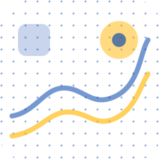
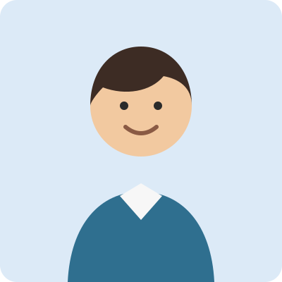
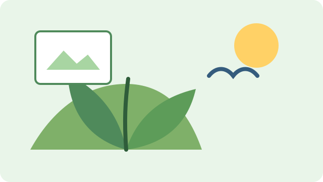
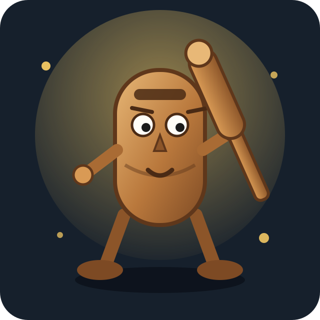

Student · tvůrce · přístupnost
Ahoj, jsem potok.
Stavím weby, které obstojí i bez dokonalého displeje, rychlé myši nebo nastavení, které používám sám. Sémantika nejdřív, efekty až potom.
Právě se učím: JavaScript a testování s čtečkou obrazovky
- Projekty
- 3
- Skauting
- 7 let
- WCAG 2.2
- 55 kritérií
O mně

Jsem student střední školy a ve volném čase stavím malé weby a nástroje. Nejvíc mě baví převádět složité věci na jednoduché rozhraní, které zvládne i člověk se čtečkou obrazovky nebo s nastavením, které se liší od mého.
Když zrovna nekoukám do editoru, chodím do přírody, fotím ji a zapisuji si pozorování. Sedm let se věnuji skautingu, kde se učím zodpovědnosti a týmové práci.
- Sémantika před dekorací. Nejdřív struktura, pak barvy.
- Klávesnice před myší. Každý odkaz musí jít projet tabulátorem.
- Čitelnost před efektem. Kontrast a velikost textu jsou pevné.
„Pozornost je nejvzácnější a nejčistší forma velkorysosti.“
Simone Weil
Jak pracuji
Tři kroky, které opakuji u každého webu, od školního projektu po rozcestník pro spolužáky.
-
Poslouchám a zjednoduším
Zjistím, co má stránka skutečně umět, a odstraním vše, co uživatele jen zpomalí.
-
Stavím sémanticky
Nadpisy, seznamy, tabulka a landmarky dávají obsahu smysl ještě před prvním CSS pravidlem.
-
Testuji jinými smysly
Projedu klávesnici, přiblížení, tmavý režim, vyšší kontrast a omezený pohyb.
Projekty a zájmy
Vybral jsem tři věci, které jsem udělal a které mě dodnes baví.
-

Rozcestník pro začátečníky
Přehled studijních materiálů, který jsem udělal pro spolužáky. Každý odkaz má výstižný popis a celý seznam jde projet klávesnicí.
- HTML
- CSS
- A11y
-

Zápisník přírody
Jednoduchá aplikace pro zaznamenávání pozorování z procházek. Zkouším na ní pracovat s daty, obrázky a s tím, aby se dala používat i v terénu.
- Data
- HTML
- Mobilně
-

Kalkulačka dopadu
Školní projekt, který spočítá orientační uhlíkovou stopu docházky do školy. Výsledky jsou textové, nejen barevné, aby byly čitelné pro každého.
- Výpočet
- Text
- Graf
Dovednosti
Přehled toho, co umím a kde to zatím jen zkouším. Slovo u každé úrovně je vždy hlavní informace, pruh je jen vizuální pomůcka.
| Dovednost | Úroveň | Kde ji používám |
|---|---|---|
| HTML a sémantika | Pokročilý | Struktura všech mých webů |
| CSS a responzivní layout | Pokročilý | Přizpůsobení telefonům i velkým obrazovkám |
| Git a GitHub | Základy | Práce ve větvích a pull requestech |
| JavaScript | Základy | Jednoduché interakce v projektech |
| Přístupnost (WCAG) | Základy | Kontrola kontrastu, klávesnice a čtečky obrazovky |
Deník dovedností
Deník dovedností: co už umím, co zkouším a co mě čeká.
-
2026 · teď
WCAG 2.2 v praxi
Procházím kritéria A a AA, měřím kontrast a zkouším stránku jen s klávesnicí.
-
2026 · jaro
Práce s Gitem a PR
Větve, slučování a řešení konfliktů. Naučil jsem se, že konflikt není chyba, ale informace.
-
Dál
JavaScript bez frameworku
Chci umět přidat interakci tak, aby stránka fungovala i kdyby se skript nenačetl.
Bonus režim · Sigeon Pex
Tung Tung Tung Sahur
Když skončí sémantika a začne internet: dřevěný bubeník s pálkou hlídá sahur a nenechá tě v klidu. Mega brainrot, ale pořád s pořádným kontrastem a plnou ovladatelností z klávesnice.
- Režim mega brainrot
- Signál tung tung tung sahur
- Speciál sigeon pex
Vlastní ilustrace, žádné cizí foto a žádný text v obrázku.
Poslat mi meme
Napište mi
Máte nápad nebo otázku?
Rád si o projektu promluvím – klidně jen pár vět. Nejrychlejší je e-mail, odpovídám zpravidla do dvou dnů.
- E-mail: potok@spsejecna.cz
- GitHub: github.com/potok